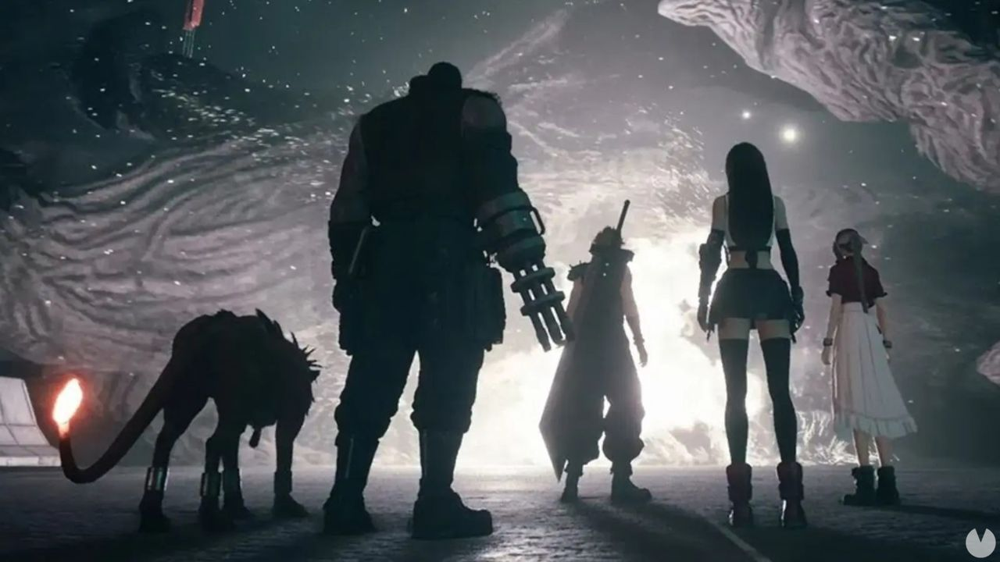
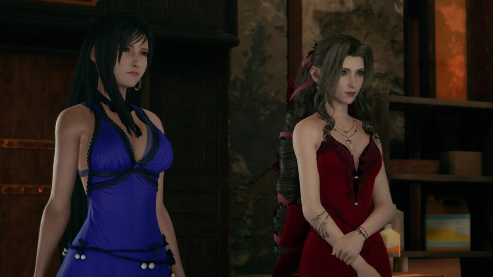

El Coronavirus no ha afectado mucho al desarrollo de la segunda parte El Coronavirus ha afectado el desarrollo de Final Fantasy 7 Remake Parte 2, pero no mucho. Esto es lo que se puede extraer de las declaraciones recogidas en The Guardian en una entrevista con Naoki Hamaguchi, co-director de la obra, y el productor Yoshinori Kitase, cuando le preguntaron por los efectos de la Covid-19 durante el lanzamiento de la primera parte, que salió en plena pandemia y confinamiento de medio mundo. Leer más
El productor de Final Fantasy 7 Remake quería más cambios  Yoshinori Kitase, productor de Final Fantasy VII Remake, ha reconocido que quería que este remake tuviera más cambios con respecto a la trama original de los que ha acabado teniendo. Leer más
No habrá censura en Final Fantasy VII Remake  Violencia, alcohol e incluso vestimenta sugerente para los personajes femeninos. Así es como clasifica Final Fantasy VII Remake la ESRB, que con su descripción ha revelado detalles muy interesantes del esperado —y cada vez más cercano— remake. Por ejemplo, dejando claro que Square Enix no se va a cortar ni un pelo a la hora de reimaginar al mítico Don Coreno. Probablemente, con baile "sexy" incluido. Leer más